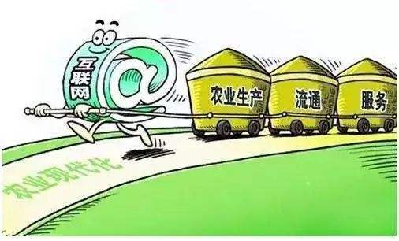
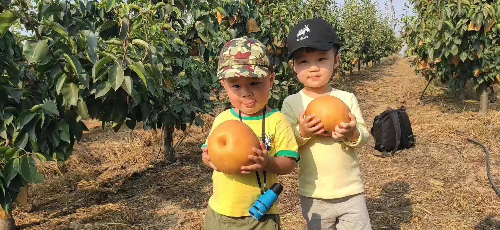
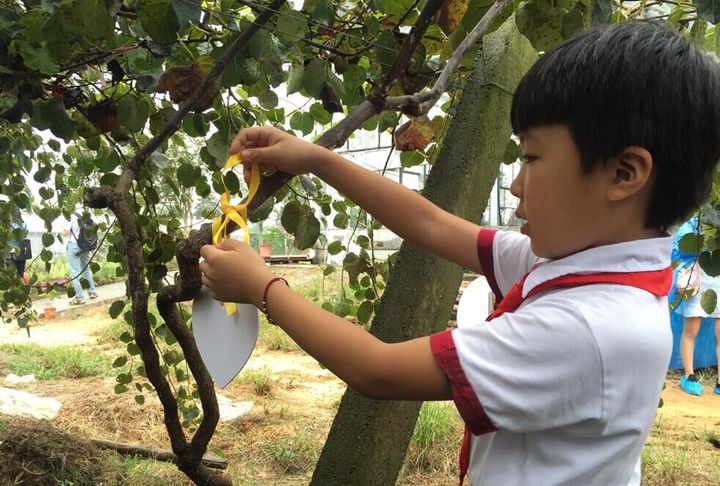
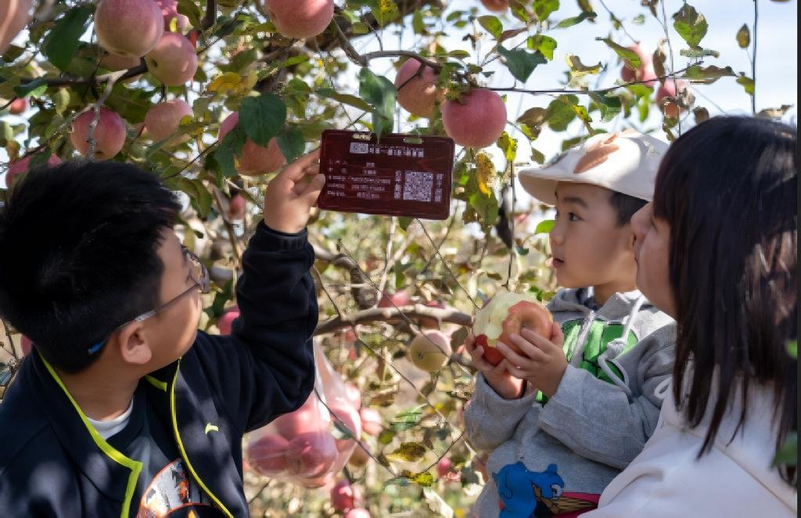

“认养一棵树”是一种将果树的种植与养护权交给消费者的新型农业模式。通过认养果树， 消费者可以了解参与果树的种植过程，并享受产生的果实。这种模式不仅满足了人们对食品安全和环境友好的需求， 同时也使消费者更加了解农业生产的过程，增强了与自然的联系。

在“互联网+农业”的推动下，“互联网+果树产业”这一细分领域已得以认证。 尤其在当下的后疫情时代，水果电商作为“互联网+果树产业”数字经济的代表， 已然成为了帮助农户解决农产品滞销问题的重要手段。但是，除了借助直播， 电商平台发展互联网果树产业，我们还能有哪些方法， 能为广大果农们寻求一条更好的发展之路，实现产供销一体化， 实现果树经济效益、社会效益最大化。

通过推广，对外宣传认养模式。市民只要花一定金额(比如一棵金果梨298元)，就能认养一棵果树，不仅可以为它取个名字、挂上认养牌，还能随时来探望，春看花、夏赏果、秋赏叶。没空来的主人，也可以通过果园的现场监控视频24小时全程观看种植过程，让您不会错过您的水果成长的每一个瞬间。

更让人心动的是，认养了这棵树，就可以享用树上结的果实，成熟后可直接去园区采摘， 或者由果园快递到家。如果因灾害天气导致果实过少，农场也会保证顾客收到约定最低产量的果实。 通过认养，可以实现种植过程全透明，认养人可以学习掌握果树种植知识、 了解果树的“前世今生”，家长还可以带小朋友在园区培养孩子的动手能力。 所以说，认养一棵果树，除了可以获得这棵树的全部果实外， 还可以获得相关的深附加值。

在乡村振兴战略的大背景下， 农旅结合是大势所趋。在农产品中延长产业链条，重塑城乡关系， 走城乡融合发展之路，乡村旅游是一大方式。以城市居民为目标用户， 以农村生态体验、互动项目为卖点，将特色农产品、旅游景点、 风情民宿进行整合包装。这不仅给农村带来了客流资金流，也推动了一三产业融合发展。 农业认养使整条产业链由过去的“产供销”变成了“供销产”。农产品滞销风险大大降低， 降低了中间环节，农民收获的利润也显著提升。未来随着农业基础设施不断完善、 种植标准不断提高、农产品品质升级，认养农业将会迎来更大的风口。